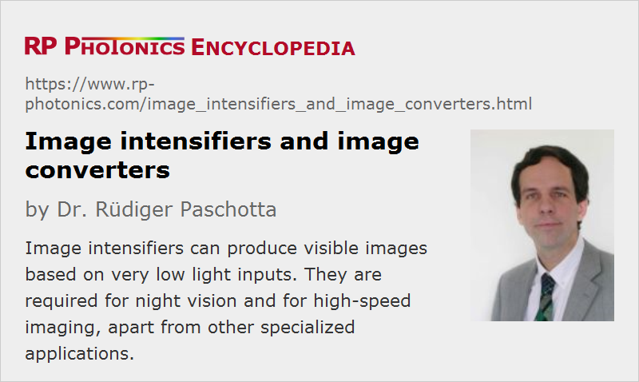

Image Intensifiers and Image Converters
Acronym: II
Definition: instruments which can intensify images acquired under faint light conditions, or convert images to other wavelengths
German: Bildverstärker, Restlichtverstärker, Bildwandler
Categories: photonic devices, light detection and characterization, optoelectronics, vision, displays and imaging
How to cite the article; suggest additional literature
Author: Dr. Rüdiger Paschotta
Image intensifiers are devices which can produce visible images based on very low light inputs. Essentially, they are needed in the following situations:
- When objects need to be observed with very little illumination, e.g. with night vision devices, the sensitivity of the human eye or of an electronic image sensor is insufficient. One may then use an image intensifier before the eye or the sensor.
- In high speed imaging, the exposure times needs to be kept very short, so that very small amounts of light are available for one image frame, even if the illumination is not particularly weak.
Image intensifiers do not necessarily provide light output at similar optical wavelengths as those of the light input. For example, one may generate visible images based on ultraviolet or infrared light inputs. The term image converters is then applied, because besides the amplification there is a conversion to a different wavelength region. However, instruments which are sensitive to visible and near-infrared light are still called image intensifiers.
In any case, spectral information is not obtained, i.e., one cannot obtain color vision.
Types of Image Intensifiers
Common features of most image intensifiers are the following:
- The input radiation is imaged to a photocathode with some kind of objective. Some fraction of the radiation is absorbed and generates photoelectrons (→ external photoelectric effect).
- Electrons are accelerated to high energies (often after some electron multiplication process) and sent to a phosphor screen, where a visible image is recovered. The phosphor must have an electrode coating, which is typically a thin coating of aluminum. A substantial part of the electron energy is lost in that coating.
- The whole setup is operated in a high vacuum (e.g. at 10−4 Pa).
There are different kinds of phosphors available, which differ in terms of emission wavelengths (color appearance), quantum yield and persistence (afterglow). Common choices are P20 and P47 phosphors, both exhibiting a green emission which falls into the spectral range where the human eye is most sensitive. That is also suitable for silicon-based image sensors, except if a weaker afterglow is required for high frame rates; for such applications, there are specialized much faster phosphors.
In some cases, one eliminates the need for a phosphor by using an image sensor with electron-beam input. That does not only lead to a very compact setup, but also eliminates the video bandwidth limitation arising from the phosphor and further improves the sensitivity. The spatial resolution can also be rather high.
First-generation Image Intensifiers Without Electron Multiplication
Image intensifiers of generation I were realized based on vacuum tubes of different kinds:
- Devices with proximity focus essentially consist of a photocathode and a phosphor screen in close proximity (e.g. in less than 1 mm distance). One can apply a high voltage between photocathode and screen, so that photoelectrons are accelerated towards the phosphor. As a result, for each photoelectron one obtains a substantial number of electrons emitted by the phosphor. Because of the small distance, the photoelectrons produced on one point of the photocathode are sent to a tiny area just opposite to that point. A limiting factor is that the voltage cannot be particularly high, because otherwise one would get electrical breakdown due to the small electrode distance.
- Substantially higher voltages and therefore higher light output of the screen becomes feasible by using a substantially larger distance between photocathode and screen. One can then use suitably shaped electrode structures to obtain accurate imaging of photoelectrons to the corresponding points on the screen. With such electrostatic focus, one can also obtain some amount of image magnification.
- An alternative approach is magnetic focus, where the imaging is obtained with a strong magnetic field.
Although no electron multiplication process is employed, there can be substantial image intensification (e.g. 30 times) because of the high quantum yield of the phosphor, which is obtained for high electron energies. For higher intensification, to all three such stages can be used in a sequence. Such devices get relatively long; they have been used mostly in military vehicles.
Such devices have been largely replaced with those based on microchannel plates, as described in the following. However, some of those devices are still used in applications where a lower amount of image intensification is sufficient.
Image Intensifiers Based on Microchannel Plates
A microchannel plate is a compact type of multi-channel electron multiplier, which is well suited for image intensifiers and was introduced in their generation II. Because moderate electron energies of a few hundred electron volts are sufficient for the input of such a plate, proximity focus as explained above can be applied. After the microchannel plate, a higher voltage of the order of 5 kV is applied for sending the output electrons to the metal-coated phosphor screen.
The image on the screen may be directly observed with the eye or can be sent to an image sensor, e.g. of CCD type – either directly or with some further imaging to adapt the image to the sensor size. In case of direct viewing, one may need to apply an image inversion in order to compensate for the inversion from the objective. For such purposes, one can use traditional lens optics or alternatively a fiber bundle or a fiber-optic plate. While fiber bundles lead to a lower spatial resolution, they allow for a more compact setup. For adapting to an image sensor size which differs from that of the optical output of the MCP, one can use a tapered fiber bundle. The achievable coupling efficiencies with lens optics (with a small f-number) or with fiber bundles are roughly comparable.
Further Improvements
The initially used photocathodes (e.g. S25) had a relatively low quantum efficiency and quite limited lifetime. In generation III image intensifiers, one has introduced gallium arsenide (GaAs) photocathodes with much better performance.
Also, an additional ion barrier film (a thin metal-oxide coating, e.g. Al2O3) on the input side of the microchannel plate has been applied, which protects the photocathode against such ion bombardment. Unfortunately, it also somewhat degrades the quantum efficiency and thus introduces additional image noise. On the other hand, it eliminates image noise caused by ions.
The achieved lifetimes where now of the order of 15,000 hours, compared with a few thousand hours of older generations.
In later versions, one has reduced the thickness of the ion barrier to a minimum and still achieved a relatively long lifetime with other improvements, in particular with auto gating of the photocathode: the photocathode voltage is automatically switched on only for limited times, depending on the illumination conditions. One therefore avoids to generate any unnecessary photocurrents and potentials for attracting positive ions. This also allows for a accurate vision even with strongly varying illumination levels.
Properties of Image Intensifiers and Converters
Spectral Sensitivity and Quantum Efficiency
The spectral response is determined by the photocathode in combination with the optical window. Frequently, the long-wavelength limit is determined by the photocathode, while absorption in the optical window sets the shot-wavelength limit.
Note that for some applications it is vital not only to have a high responsivity but also a high quantum efficiency. This is particularly the case where photon counting is required: the quantum efficiency then determines how many of the photons are lost. The quantum efficiency may also be degraded by the optical window and by the microchannel plate: the latter may not react to every photon sent by the photocathode.
Overall Image Intensification Factor
The overall amount of image intensification depends on the product of the following factors:
- the responsivity of the photocathode
- the gain of the microchannel plate
- the efficiency of the phosphor, which also depends on the electron energy at that point
Image Noise
For minimum noise, one requires a photocathode with high quantum efficiency and a microchannel plate with low-noise electron amplification. For the latter, the operation voltage should not be chosen to high, although that would increase the amount of intensification.
Dynamic Range
The dynamic range – the ratio of maximum to minimum input signal intensities – of an image intensifier should be considered in two different variants:
- Within a single image frame, the dynamic range is limited by the used image sensor. This is often of the order of 20 dB to 30 dB.
- The inter-scene dynamic range can be far higher – even well above 100 dB. This is because a number of different factors can be exploited: a variable f-number of the objective, the dynamic range of the image sensor, the electron gain of the multichannel plate (adjusted through the operation voltage) and the exposure time (through the duty cycle with time gating). Therefore, one can make imaging devices which can work in a very wide range of illumination conditions, e.g. from star light to daylight.
Video Bandwidth
The amplified electron image is generated with a very high bandwidth, which is normally limited only by some spread of electron transit time (often well below 100 ps). However, the light emission of a phosphor occurs over a much longer time after irradiation – sometimes tens to hundreds of milliseconds. Another limiting factor is the frame rate of an image sensor.
For high-speed imaging (with high frame rate), one may use an image sensor with electron-beam input, not requiring a phosphor.
Fast Gating
For high speed imaging, it can be important to have a fast gating capability. That is usually achieved by switching the voltage between the photocathode and the microchannel plate. Typical switching times are a few nanoseconds. That is of course far lower than the minimum possible frame period.
Spatial Resolution
The spatial image resolution can be limited by different factors:
- the quality of the imaging objective
- the resolution of the microchannel plate
- the details of the image transfer e.g. from the phosphor to the image sensor (e.g. with lens optics, a fiber-optic plate or a fiber bundle)
The achieved resolution varies substantially between different devices.
Power Consumption
The electrical power consumption of an image intensifier device can be quite low. A set of not too heavy batteries, powering a high-voltage source, may last for several days of uninterrupted operation. This is because the strip current is usually not that large, and one can use an efficient DC-to-DC voltage converter to produce the high-voltage.
Lifetime
A certain amount of performance degradation can occur during operation of an image intensifier. One factor is the degradation of the photocathode by bombardment with positive ions, which can be generated from gas molecules for a non-perfect vacuum, combined with ionization when they are hit by fast electrons. The positive ions are attracted by the photocathode and can introduce some damage, which gradually decreases the performance. That effect, however, can be largely suppressed with an ion barrier on the input side of the MCP.
Rapid photocathode degradation can occur under conditions of bright illumination. Particularly some older devices would even quickly be damaged under such conditions. Modern image intensifiers are usually much less sensitive to that, because they use auto gating and other measures for adjusting to a wide range of illumination conditions.
There is also some degradation of the microchannel plate during operation. It does not simply depend on the operation time, but basically on the accumulated electrical output charge: aging is substantially faster with input light than without.
Applications of Image Intensifiers and Image Converters
The classical application of image intensifiers is in night vision devices, which can for example be integrated into the helmets of soldiers. Even when a scene is illuminated only by moon light, a graduation is possible without active illumination.
Another application field is astronomy, where very faint light must be used for imaging.
For high-speed imaging, the fast time gating functionality of image intensifiers in combination with the high sensitivity (allowing for very short exposure times) can be very useful. For the imaging of accurately repetitive processes, one may record a single image frame per event with a variable delay time in order to effectively acquire a video with extremely high frame rate – far more than directly possible with a usual image sensor. Image intensifiers are also suitable for fluorescence lifetime imaging.
The time gating capability is also useful for specialized applications like LIDAR, where it can be used to realize range gating.
Image intensifiers without a photocathode are suitable for UV and X-ray imaging, e.g. for medical purposes or for industrial inspection.
One can also realize highly sensitive spectrometers, for example by combining a microchannel plate with dispersive optics based on an diffraction grating and using a photodiode array as the detector.
Possible Alternative: SPAD Arrays
In some application areas, it has become possible to use arrays of avalanche photodiodes, which are operated in Geiger mode for single-photon detection. Although one has much less current amplification in such devices, it is sufficient for the purpose. Such arrays can be far cheaper than vacuum devices containing MCPs, do not require a high voltage and are comparatively robust. However, their spectral response essentially limits them to visible and near-infrared light (up to roughly 1 μm wavelength), and their dark count rate is much higher.
Suppliers
The RP Photonics Buyer's Guide contains 9 suppliers for image intensifiers and image converters.
Questions and Comments from Users
Here you can submit questions and comments. As far as they get accepted by the author, they will appear above this paragraph together with the author’s answer. The author will decide on acceptance based on certain criteria. Essentially, the issue must be of sufficiently broad interest.
Please do not enter personal data here; we would otherwise delete it soon. (See also our privacy declaration.) If you wish to receive personal feedback or consultancy from the author, please contact him e.g. via e-mail.
By submitting the information, you give your consent to the potential publication of your inputs on our website according to our rules. (If you later retract your consent, we will delete those inputs.) As your inputs are first reviewed by the author, they may be published with some delay.
See also: night vision devices, photocathodes, microchannel plates, photodetectors, imaging
and other articles in the categories photonic devices, light detection and characterization, optoelectronics, vision, displays and imaging
|  |
If you like this page, please share the link with your friends and colleagues, e.g. via social media:
These sharing buttons are implemented in a privacy-friendly way!